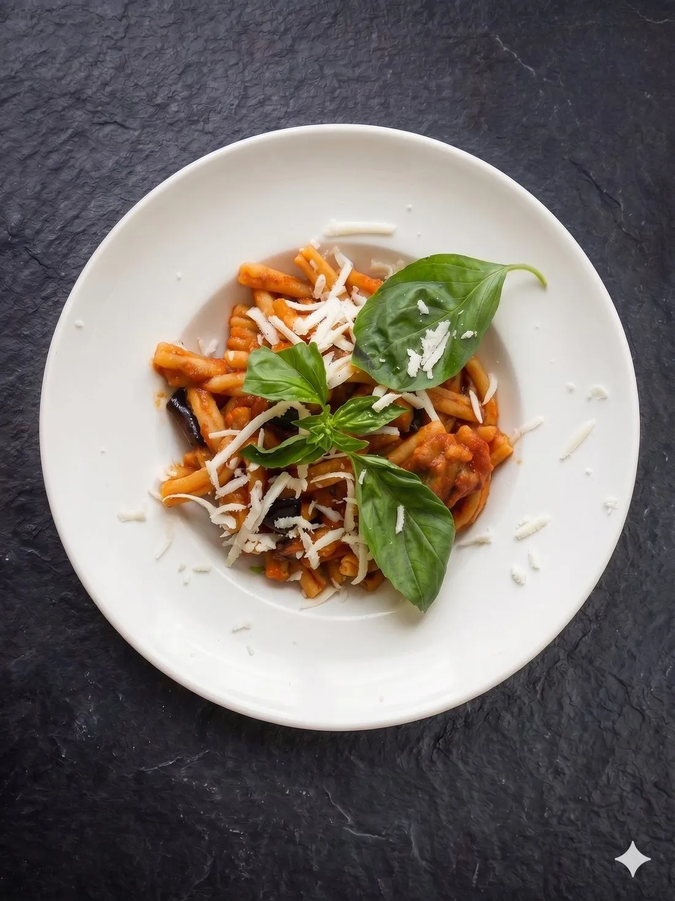

L'Alba al Mercato
Ogni giorno inizia prima del sole: scegliamo a mano il pesce più fresco e gli agrumi profumati del mercato di Siracusa. Solo il meglio arriva alla vostra tavola.
«Non sei un cliente, sei un ospite a casa nostra.»
Dietro ogni piatto ci sono volti, mani e ricordi: una famiglia siciliana che cucina come si faceva una volta, con il cuore.

Istantanee di ogni giorno

